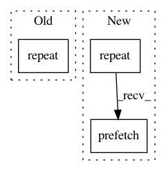

da80463d2e35e3d1d4fb1fdd58992c9453f95dcf,calamari_ocr/ocr/backends/tensorflow_backend/tensorflow_model.py,TensorflowModel,create_dataset_inputs,#TensorflowModel#Any#Any#,232
Before Change
dataset = dataset.map(convert_to_sparse).prefetch(batch_size * 10)
if self.graph_type == "train":
dataset = dataset.shuffle(10000, seed=self.network_proto.backend.random_seed).repeat().prefetch(batch_size * 10)
else:
pass
After Change
dataset = tf.data.Dataset.from_generator(gen, (tf.float32, tf.int32, tf.int32, tf.int32))
if self.graph_type == "train":
dataset = dataset.repeat().shuffle(10000, seed=self.network_proto.backend.random_seed)
else:
pass
dataset = dataset.padded_batch(batch_size, ([None, line_height], [None], [1], [1]),
padding_values=(np.float32(0), np.int32(-1), np.int32(0), np.int32(0)))
dataset = dataset.map(convert_to_sparse)
data_initializer = dataset.prefetch(5).make_initializable_iterator()
inputs = data_initializer.get_next()
dropout_rate = tf.placeholder(tf.float32, shape=(), name="dropout_rate")
return inputs[0], tf.reshape(inputs[2], [-1]), inputs[1], dropout_rate, data_initializer
In pattern: SUPERPATTERN
Frequency: 3
Non-data size: 3
Instances
Project Name: Calamari-OCR/calamari
Commit Name: da80463d2e35e3d1d4fb1fdd58992c9453f95dcf
Time: 2018-06-28
Author: wick.chr.info@gmail.com
File Name: calamari_ocr/ocr/backends/tensorflow_backend/tensorflow_model.py
Class Name: TensorflowModel
Method Name: create_dataset_inputs
Project Name: tensorflow/tpu
Commit Name: f80592836b5c17fd3e6be14d3f1ad8a3a7aa3663
Time: 2017-08-24
Author: frankchn@google.com
File Name: cloud_tpu/models/alexnet/alexnet.py
Class Name:
Method Name: input_fn
Project Name: tensorflow/tpu
Commit Name: 2f8658fbb6e0a545f18618b6238936280f80382c
Time: 2017-10-02
Author: frankchn@google.com
File Name: cloud_tpu/models/cifar/cifar.py
Class Name:
Method Name: input_fn